FAST SIDE
Vuosien 2016–2026 kuvallinen aineisto tiivistyy timelapseksi. Pitkä aika muuttuu nopeasti liikkuvaksi kuvavirraksi.
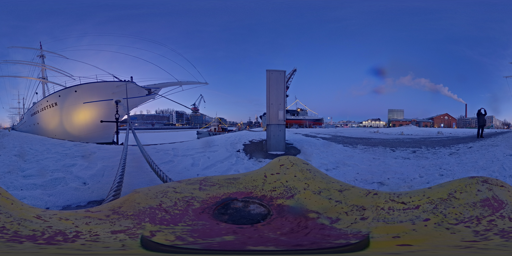
Kuva · aika · muisti · sattuma · materia
TRACES BETWEEN on jatkuvasti laajeneva teosperhe, jossa valokuvapäiväkirja, 360-kuvaus, liikkuva kuva, verkkotaide, esineet ja itse rakennetut tekniset ympäristöt kohtaavat.
Työskentelyn lähtökohtana on vuodesta 2010 päivittäin pitämäni valokuvapäiväkirja. Arkinen kuvaaminen kerrostaa aineistoa, johon palaan myöhemmin: paikkoja, ihmisiä, valoa ja pieniä tapahtumia, joiden merkitys ei välttämättä avaudu kuvaushetkellä.
Valokuva ei säilytä kaikkea. Se voi palauttaa mieleen tilanteen, mutta myös näyttää, mitä olen unohtanut. Muistamisen ja unohtamisen väliin jää tilaa uusille yhteyksille ja tulkinnoille.
Sama kuva voi olla ensin havainto, myöhemmin muistijälki ja lopulta osa verkkoteosta tai installaatiota. Vuodesta 2016 kertyneet 360-panoraamat avaavat tämän aineiston myös katseen ympärille: kuvasta voi löytää jotakin, mitä en itse huomannut sitä ottaessani.
Teosperheessä digitaalinen kuva kohtaa materiaalisen maailman. Vanha kehitystankki, optiikka, koodi ja 3D-tulostettu QR-koodi antavat kuville erilaisia paikkoja ja katsomiselle erilaisia rytmejä.
Teosperheellä ei ole yhtä lopullista muotoa. Se rakentuu keräämisestä, palaamisesta ja uudelleentulkinnasta — uusista jäljistä vanhojen välissä.
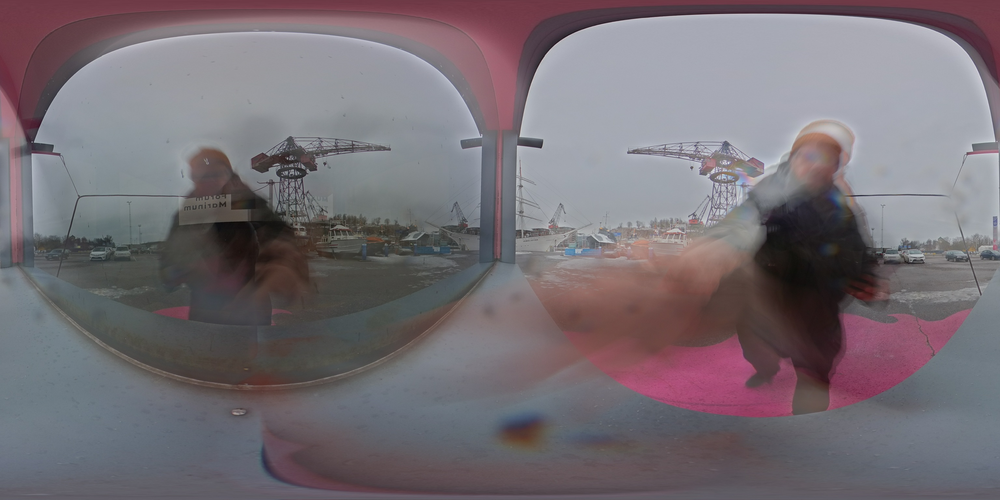
TRACES BETWEEN perustuu pitkään valokuvalliseen jatkumoon ja erityisesti vuodesta 2016 lähtien kuvattuihin 360-panoraamoihin. Näyttelyyn rajatussa muodossa kokonaisuus jakautuu kahteen erilaiseen rytmiin: FAST SIDE tiivistää ajan timelapseksi, kun taas SLOW SIDE avaa kuvia, tekstejä ja ääniä hitaasti ja satunnaisesti verkkoteoksessa.
Fyysinen installaatio yhdistää digitaalisen kuvan historialliseen valokuvaesineeseen, optiikkaan, mikrotietokoneisiin ja 3D-tulostettuun QR-koodiin.

Vuodesta 2010 · havainto, merkitys ja paluu
Olen kehittänyt valokuvapäiväkirjamenetelmää vuodesta 2010 lähtien oman päivittäisen kuvaamiseni sekä pedagogisen työni yhteydessä.
Menetelmässä kuvataan säännöllisesti itselle merkityksellisiä asioita. Lähtökohtana on oma havainto ja suhde arkeen: mikä pysäyttää, mikä toistuu, mikä tuntuu juuri tänään kuvaamisen arvoiselta? Tavallinenkin tilanne voi saada merkityksen, kun sitä katsoo tarkemmin tai siihen palaa myöhemmin.
Kuvaaminen on minulle tapa olla läsnä kontemplatiivisessa hengessä. Kuvien teknisen onnistumisen rinnalle nousevat havainto, kokemus ja henkilökohtainen merkitys. Kertyvä päiväkirja toimii muistin tukena ja tekee ajan kulumista näkyväksi.
Taiteellisessa työskentelyssäni menetelmä jatkuu kuvaamisesta palaamiseen ja uudelleentulkintaan. Arkistoa voi järjestää, rinnastaa ja avata sattumalle. Näin päiväkirjan yksityisestä havainnosta syntyy uusia kuvia, sarjoja ja teoksia.
Ari Rapo: Photodiary-menetelmäopas – Onnistumisen elämyksiä valokuvapäiväkirjan avulla, 2020.
ISBN 978-952-93-3662-3.
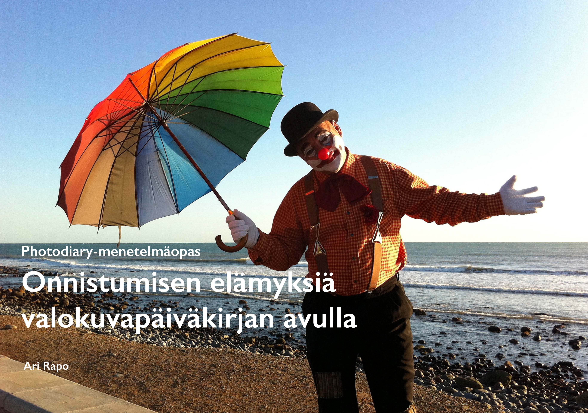

Läsnäolo / poissaolo
Valokuvapäiväkirjani oli jo osa elämääni siinä vaiheessa, kun isäni muistisairaus alkoi vähitellen tulla näkyväksi 2010-luvun jälkipuoliskolla. En osaa nimetä tarkkaa alkamishetkeä, mutta muistamisen hauraus alkoi vähitellen tulla osaksi yhteisiä kohtaamisiamme.
Dokumentoin tapaamisiamme valokuvin ja videoin. Meillä oli myös yhteisiä kuvankatseluhetkiä, joissa vanhat valokuvat toimivat muistin tukena ja keskustelun avaajina. Isä oli vähän yli 70-vuotias kirjoittaessaan käsin kaksiosaisen omakustannemuistelmateoksen Sininen taivas mustui. Hän ei ollut erityisen kirjallisesti suuntautunut eikä suuri lukija, mutta hänellä oli vahva tarve tallentaa oma elämänsä kirjaksi. Erityisen tärkeän osan muodostivat evakkomuistot.
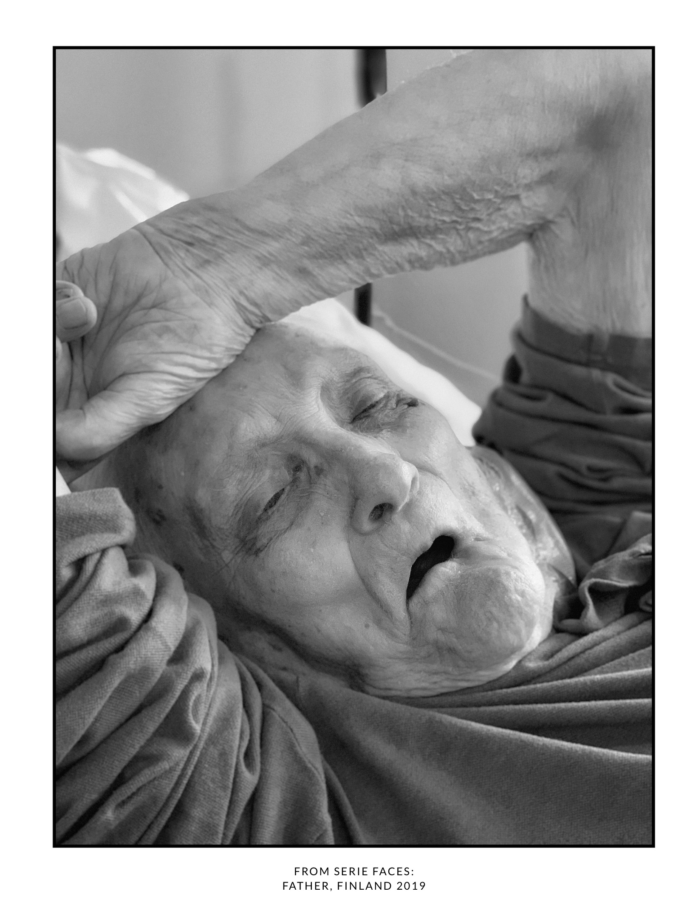
Muistisairauden edetessä aloin ehkä aiempaa selvemmin ymmärtää, että kuvat eivät ole vain tallenteita menneestä. Ne voivat toimia muistamisen välineinä, laukaisijoina ja joskus myös korvikkeina sille, mikä muuten katoaa.
Yksi oma vahva muistoni on valokuva yhteiseltä saariretkeltä, kun olin noin 6–7-vuotias. Isä otti kuvan meistä itselaukaisimella rantakalliolla. Kuvasta on tullut minulle enemmän kuin dokumentti tapahtuneesta: se kantaa mukanaan paikan, tilanteen ja yhdessäolon tuntua.
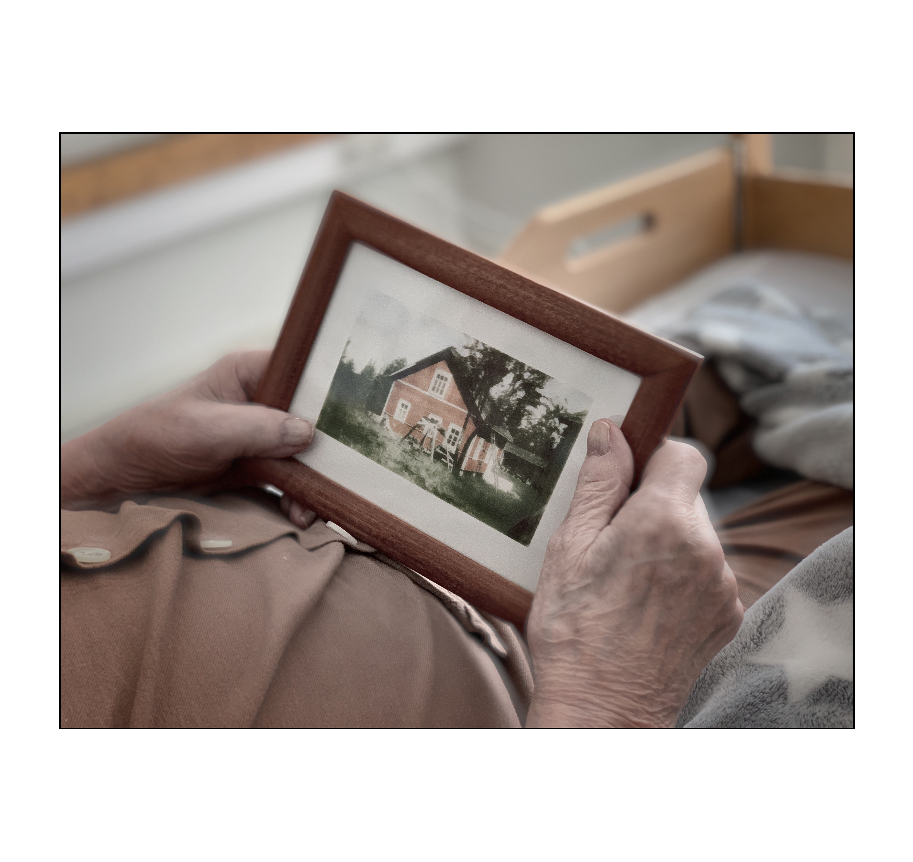

360-kuvaus affordanssina
360-kuvaus tuli työskentelyyni ensin pedagogisen käytön kautta, mutta sen taiteelliset mahdollisuudet alkoivat pian kiinnostaa enemmän. Kyse ei ole teknisestä ylivertaisuudesta, vaan välineen erityisestä affordanssista.
360-kuvassa kaikkea ei päätetä kuvaushetkellä. Osa valinnoista siirtyy myöhempään katsomiseen ja rajaamiseen. Tämä sopii työskentelyyni, jossa sattuma, palaaminen, muistaminen ja uudelleentulkinta ovat keskeisiä.
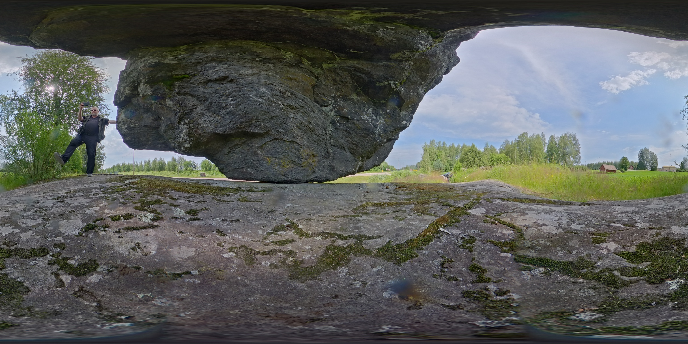
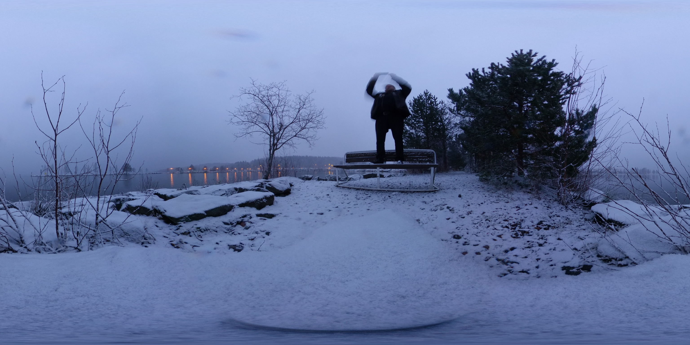
Vuosien 2016–2026 kuvallinen aineisto tiivistyy timelapseksi. Pitkä aika muuttuu nopeasti liikkuvaksi kuvavirraksi.
Verkkoteos avautuu hitaasti: satunnaiset 360-kuvat, tekstit ja äänet rakentavat fragmentaarisen muistamisen kokemuksen.
Teos näyttää kaksi erilaista tapaa kokea sama arkisto ja sama ajallinen kerrostuma.
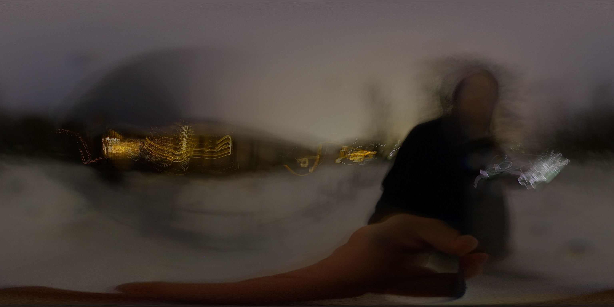
Kuvan syntymisen välineestä katsomisen paikaksi
Teoksen fyysisenä ytimenä toimii 1940-luvulta peräisin oleva Osvald Hedenströmin kehitystankki. Valokuvien kehittämiseen käytetty esine kantaa mukanaan valokuvauksen historiaa, käytön jälkiä ja materiaalista aikaa.
Tankin alkuperäinen tehtävä liittyi kuvan syntymiseen pimeässä. TRACES BETWEEN -teoksessa sen sisään katsotaan: historiallinen valokuvaesine muuttuu digitaalisen kuvavirran katselupaikaksi. Vanha ja uusi teknologia asettuvat samaan esineeseen.
Katsominen vaatii katsojalta liikkeen. Hän lähestyy, kumartuu ja asettuu aukon äärelle. Julkisessa näyttelytilassa syntyy hetkeksi henkilökohtainen suhde kuvaan ja sen ajalliseen virtaan.
Esine ei ole rekvisiittaa. Sen paino, pinta ja historia ovat osa sitä tapaa, jolla teos kohdataan.
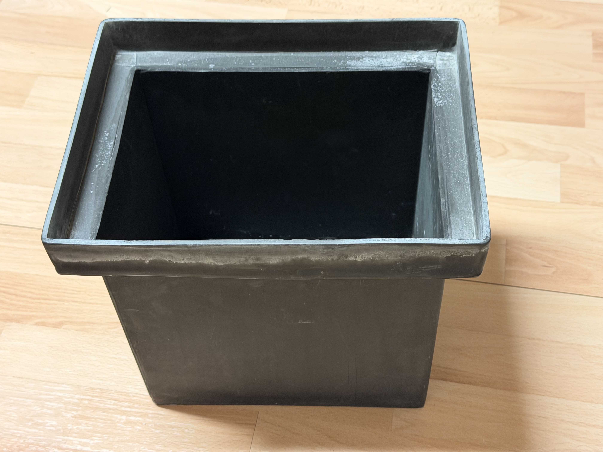

Fresnel-linssi ja QR-koodi
Fresnel-linssi tuo FAST SIDE -kuvavirran katsojan lähelle. Ohut, rengasmaisista vyöhykkeistä rakentuva linssi suurentaa kuvaa ja tekee katseen etäisyydestä ja asennosta osan kokemusta.
Katsoja pysähtyy esineen äärelle ja etsii oman katsomiskohtansa. Digitaalinen kuva kohdataan fyysisen optiikan ja oman kehon kautta.

3D-tulostettu QR-koodi avaa toisen reitin: puhelimen kautta SLOW SIDE -verkkoteokseen, jossa kuvat, tekstit ja äänet avautuvat hitaasti ja sattumanvaraisesti.
Koodi on samalla osoite ja esine. Tavallisesti litteä merkki saa painon, pinnan ja materiaalin. Linssi ja QR-koodi yhdistävät fyysisen kohtaamisen digitaaliseen kuvaan kahdella erilaisella tavalla.
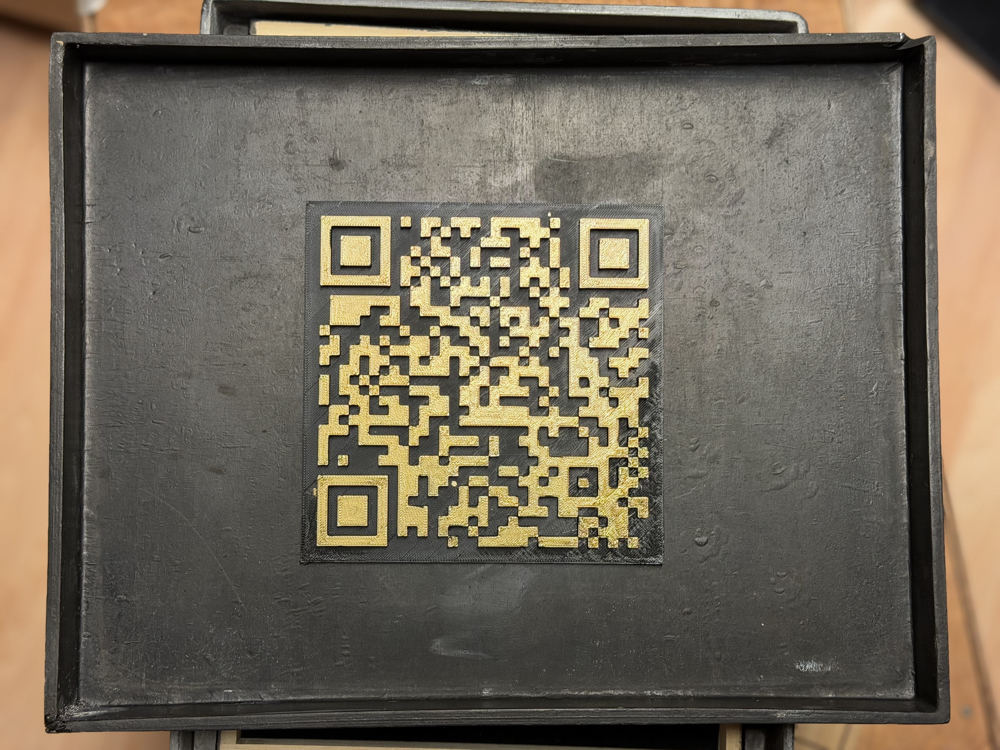
DIY · koodi · materia
DIY-ajattelu on kulkenut valokuvauksen rinnalla pitkään. Kamera, optiikka, kemia, vedostaminen ja digitaalinen kuvankäsittely ovat opettaneet, että välinettä voi myös tutkia, muokata ja rakentaa uudelleen.
TRACES BETWEEN -teoksessa tämä ajattelu jatkuu Raspberry Pi -tietokoneisiin, Linuxiin, ohjelmointiin, verkkoympäristöihin ja 3D-tulostukseen. Valmis laite ei yksin määrää teoksen muotoa: kokeilen, millainen tekninen ratkaisu palvelee kuvan kohtaamista.
Rakentaminen on osa taiteellista prosessia. Näytön koko, kotelon rakenne, johtojen reitit ja kuvan vaihtumisen rytmi vaikuttavat kokonaisuuteen. Kokeilu synnyttää uusia kysymyksiä, ja ratkaisu löytyy usein vasta tekemällä.
Koodi ei siten ole vain näkymätön toteutustapa. Se järjestää aikaa, toistoa ja sattumaa — samoja asioita, joita tutkin valokuvapäiväkirjassani.
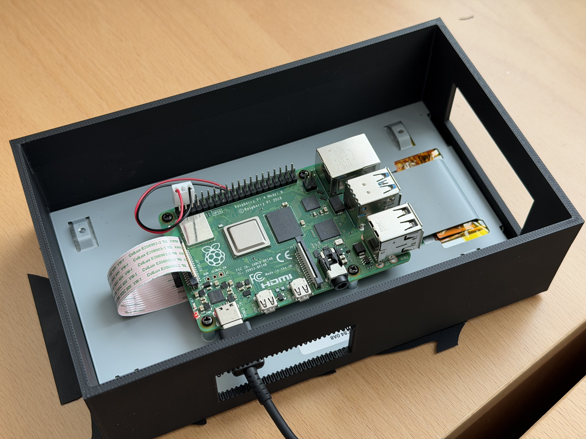

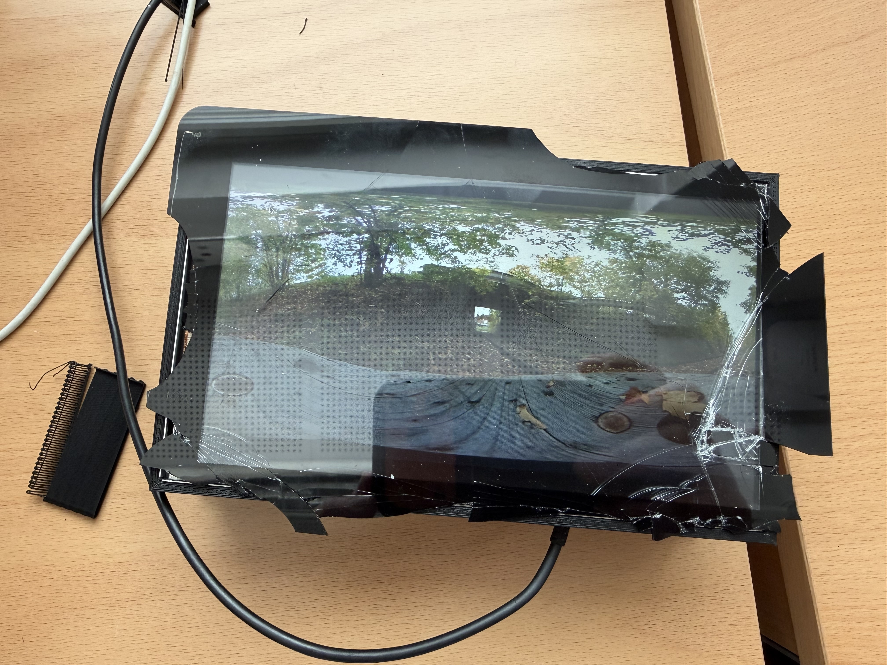
Prosessi alkoi kirja-ajatuksesta, mutta harhailu kuvan, verkon, koodin, esineen ja installaation välillä muutti koko teoksen suunnan.
Oivallus siitä, ettei lopputuloksen tarvitse asettua yhden välineen tai valmiin formaatin sisään, oli henkilökohtainen läpimurto taiteilijaidentiteetissäni. Harhailusta tuli menetelmällinen voimavara.

Samalla kouluttaminen ja pedagoginen työ tulivat vähitellen yhä vahvemmin mukaan. Yrittäjänä aloitettu kouluttaminen johti uraan ammatillisessa koulutuksessa, jossa olen toiminut opetuksen, projektien, kehittämisen ja ohjauksen tehtävissä useissa organisaatioissa. Näiden vuosien aikana teknologia ei ole ollut minulle vain väline, vaan jatkuvan uteliaisuuden kohde: Macintoshit, DTP, internet, uusmedia, koulutusteknologia, ohjelmointi ja myöhemmin tekoäly ovat kaikki avanneet uusia tapoja ajatella tekemistä.
Taiteilijaidentiteettini onkin rakentunut jatkuvasta liikkeestä valokuvan, teknologian, median, pedagogiikan ja kokeilemisen välillä. Minulle ominaista ei ole yhden välineen hallinta vaan uusien mahdollisuuksien tutkiminen, rinnakkaisten työskentelytapojen yhdistäminen ja omien ideoiden vieminen uusiin muotoihin. TRACES BETWEEN jatkaa tätä samaa pitkää linjaa: siinä analoginen valokuvahistoria, digitaalinen kuva, verkko, koodi, DIY-rakentaminen ja muistaminen kohtaavat samassa teoksellisessa ympäristössä.


TRACES BETWEEN ei rajoitu yhteen installaatioon. Se toimii kontekstina, jonka sisällä syntyy uusia verkkoteoksia, kokeiluja, kuvia, ääniä, esineitä ja tilallisia ratkaisuja.
Satunnaisuus, osallistuminen, muistijäljet ja kuvalliset fragmentit saavat uusia verkkopohjaisia muotoja.
3D-tulostus, vanhat valokuvaesineet, näytöt ja itse rakennetut laitteet jatkavat materiaalista tutkimusta.
Valokuvapäiväkirja ja jatkuva 360-kuvaus tuottavat uutta aineistoa teosperheen uusille haaroille.

Kehitys on jo käynnissä
Seuraava vaihe ei tarkoita valmiin teoksen parantamista, vaan teosperheen kasvattamista uusilla yhteyksillä ja esitystavoilla.
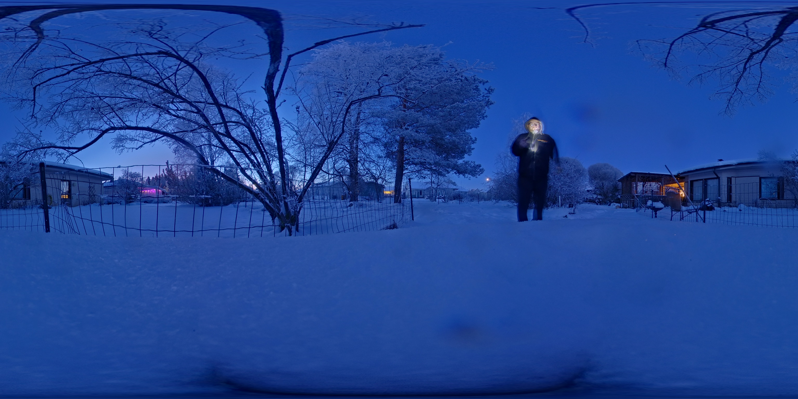
Valokuvataiteilija, mediataiteilija ja pedagogi.
Suomi · s. 1962
Työskentelyni perustuu pitkäkestoiseen havainnointiin ja vuodesta 2010 päivittäin pitämääni valokuvapäiväkirjaan. Tutkin muistia, aikaa, toistoa ja läsnäoloa dokumentaarisen, kontemplatiivisen ja kokeellisen valokuvauksen keinoin.
Kävelen, havainnoin, kerään ja palaan. Annan kuvien kertyä ajan myötä. Niiden merkitykset muodostuvat ajallisista kerrostumista, pienistä vaihteluista ja rinnastuksista.
Valokuva on tekemiseni ydin. Sen rinnalla työskentelen tekstin, liikkuvan kuvan, verkkoympäristöjen ja tilallisten rakenteiden kanssa. Minua kiinnostaa, miten kuva voi muuttua ympäristöksi, jäljeksi tai kynnykseksi.
Valokuvapäiväkirjaan pohjautuva teoskokonaisuus liikkuu kuvan, verkkoteoksen ja installaation välillä. Vuosien 2016–2026 360-panoraamat, historiallinen valokuvaesine, liikkuva kuva ja verkkopohjaiset muistijäljet tuovat samaan tilaan erilaisia ajallisia rytmejä.
Itse rakennetut tekniset ympäristöt ovat osa teoksen materiaalia ja ajattelua. Analogiset valokuvausvälineet, mikrotietokoneet, optiikka ja koodi jatkavat samaa kokeilevaa työskentelyä.
Opetuksen ja ohjauksen parissa tekemäni työ tukee reflektiivisiä, kokemuksellisia ja pitkäkestoisia taiteellisia menetelmiäni.
Photodiary-menetelmäopas – Onnistumisen elämyksiä valokuvapäiväkirjan avulla
Raponet Photodiary, 2020
ISBN 978-952-93-3662-3
arirapo [at] photodiary.guru
Valikoituja reittejä teosperheeseen
TRACES BETWEEN — project zine
Ari Rapo · 2026
Julkaisu seuraa TRACES BETWEEN -teosperheen rakentumista ja avaa sen taiteellisia lähtökohtia, työskentelymenetelmiä ja teosten välisiä yhteyksiä. Se täydentyy teosperheen kehittyessä.
Sama HTML/CSS-lähde toimii verkkoversion, PDF:n ja A4-vaakatulostuksen pohjana.
Versio 0.2 · 30.10.2026
Valokuvat: Ari Rapo. Historiallinen esine -sivun katsomistilanne on tekoälykuvitus. Tekoälyä on käytetty myös tekstien muotoilun ja verkkototeutuksen apuna.
© Ari Rapo 2026. All rights reserved.